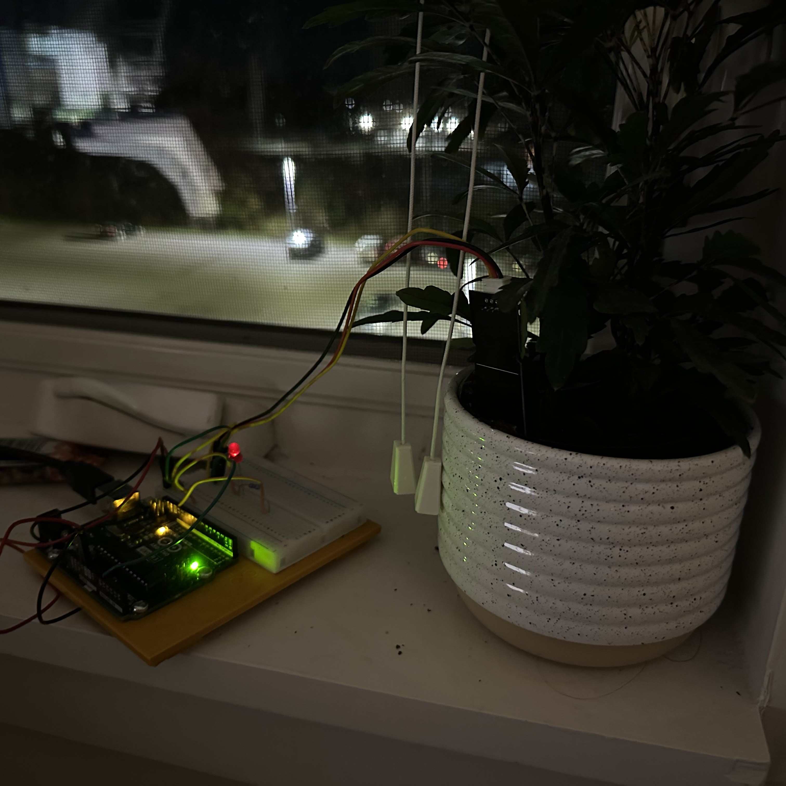
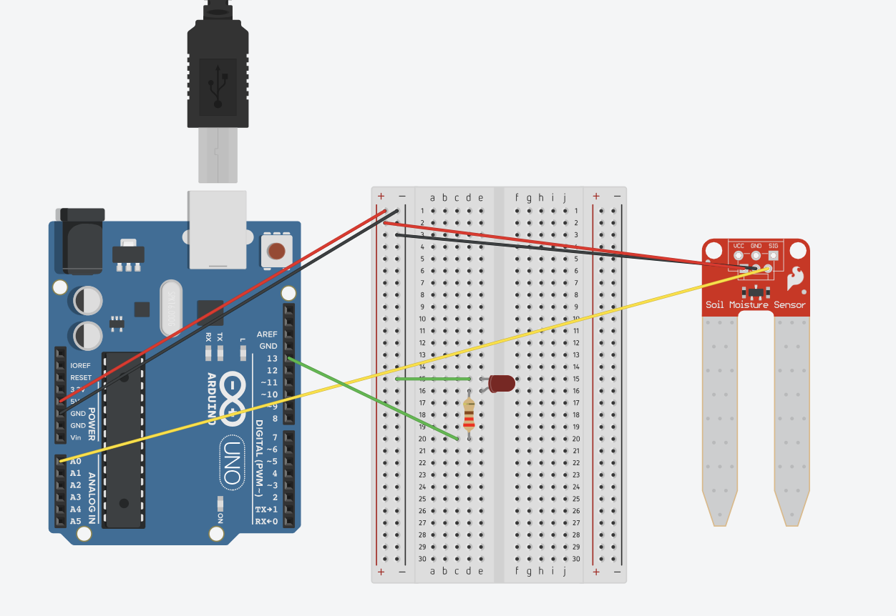
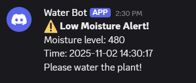
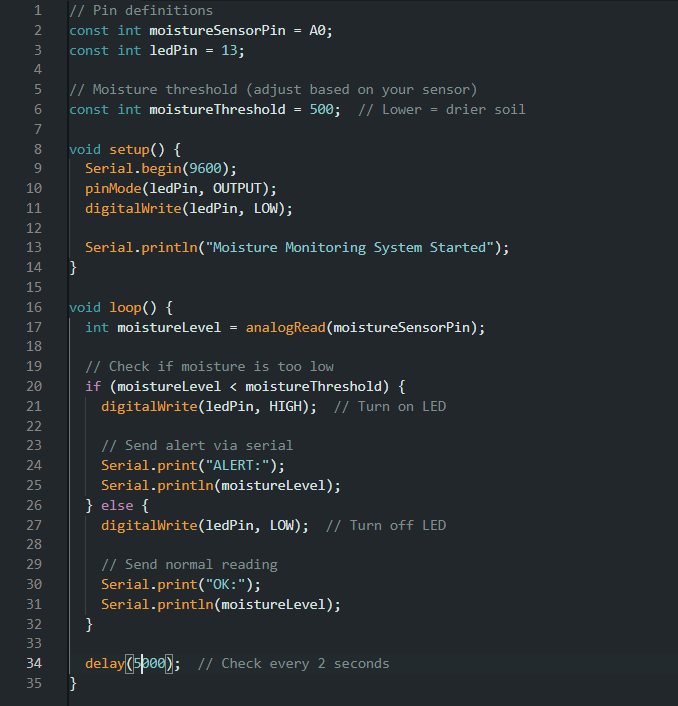
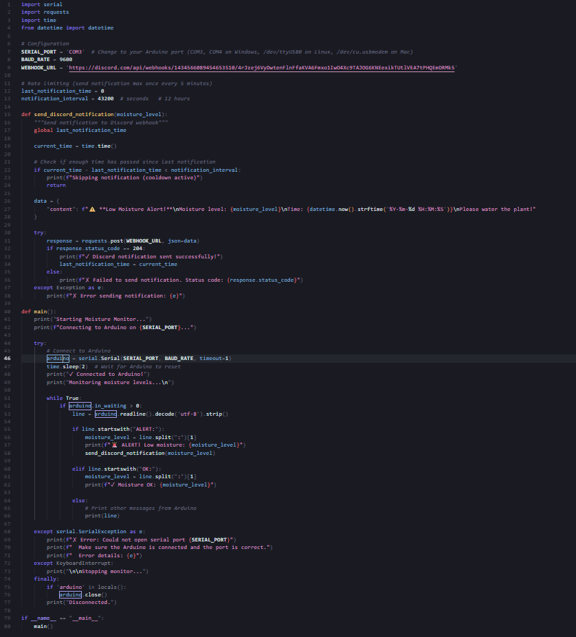

Arduino Project 1 - Plant Problem
IGME 470
The Plant Problem is our first project, creating a system that solves a real world plant related problem.
I recently got gifted house plants, having never been a plant parent before. I often forget to water them, giving them a cup of water once a week-ish. My solution which I made for this project, is using a moisture sensor to detect when the plant needs water and alerting me on Discord through a webhook.
This way, I can be notified wherever I am when my plant needs water, and I don't have to worry about forgetting to check on it. It also has an LED which stays on as long as the plant is past a dryness threshold.


The discord alert system has a ping cooldown of 12 hours (if the plant is still dry, it will reping every 12 hours) to avoid spamming notifications.
Overall, this project was a great way to learn about using arduinos and making our own ideas with the Arduino and interfacing with other services like Discord through serial communication.
The parts used:
- 1x Moisture Sensor
- 1x LED
- 1x 220Ω Resistor



The Arduino code writes to the serial monitor and triggers the LED, and then the Python script reads the serial output, and if the threshold "ALERT:" threshold is met, it sends a Discord message.